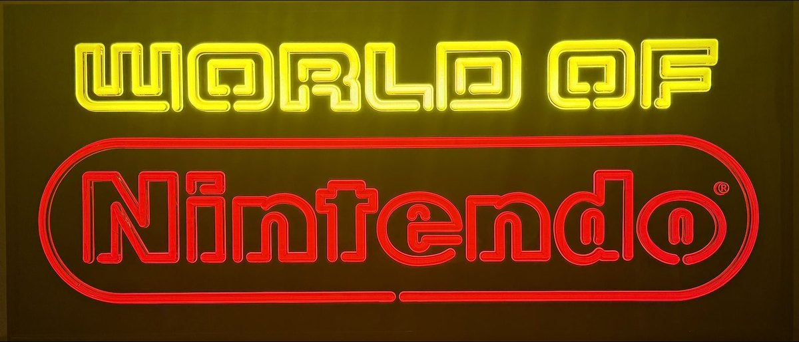
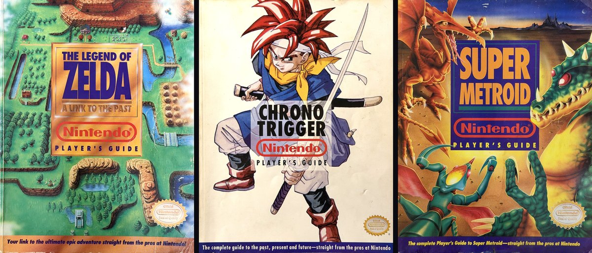
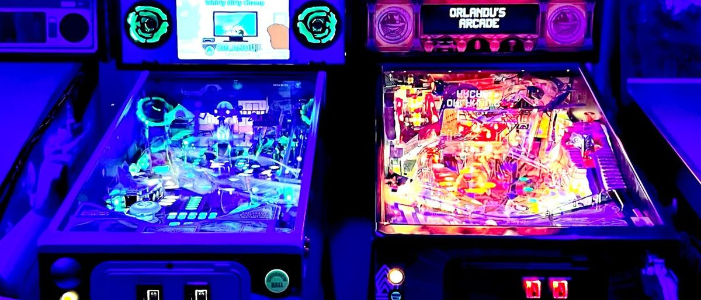
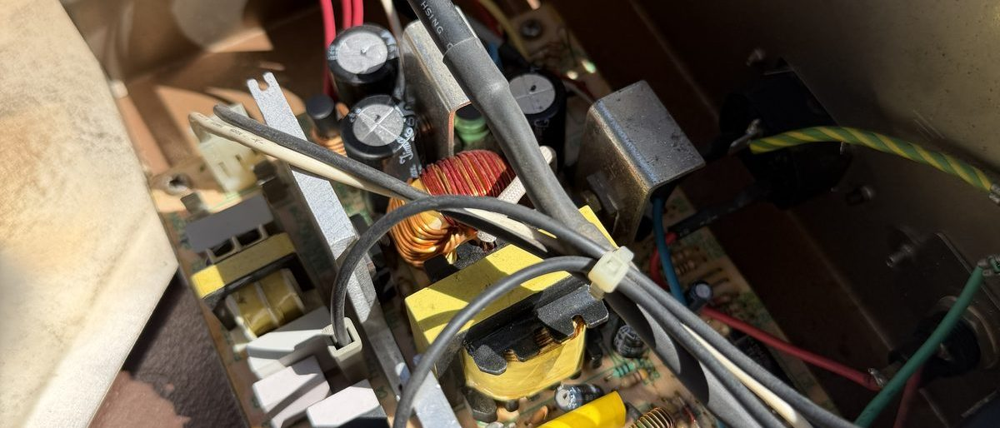

Step inside

Two Rooms of Cabinets & Pinball
The garage arcade with four uprights and the pinball row, plus the inside game room with the candy cab and cocktail — six cabinets and four pins in all.

Sony PVM · BVM · LMD
A working museum of Sony professional video — thirteen units across eight models, documented in the Trinitron Fleet magazine.

Nintendo · Sega · NEC · Sony
From front-loader NES to the PC Engine Duo-R and Turbo Express — the home hardware that feeds the CRTs, much of it RGB-modded or restored.

Toppers, Cards & Retail Neon
Fifteen original PlayChoice-10 arcade toppers, eighteen NOS VS. instruction cards, and the Nintendo retail signage that told a shop floor what was inside.

Twenty-One Player’s Guides
Nintendo’s official strategy guides, photographed cover by cover — the SNES years, from A Link to the Past to Chrono Trigger.

Photos & Video from the Arcade
The growing photo and video log — new shots from the garage land here as they happen.

Current & Completed Projects
Repairs, rebuilds, and restorations — from pinball board swaps to arcade PSU rebuilds and CRT calibration.

Duplicates & Departures
The collection consolidates over time. Monitors and hardware currently listed for sale live here.

The Hunt List
Actively searching: BKM input cards, specific consumer CRTs, and a few white whales. Have one? Get in touch.
The reading room
The Sony AMS-100 Has No Written History
The primary literature on Sony’s modular audio confidence monitor — the frame, the board system, a registry of documented units, and the market record.
Trinitron Fleet, Vol. 1
The interactive magazine on the monitor fleet — every model with its full spec sheet, the battle of the twenties, and how to speak broadcast.
What to Check Before You Buy a PVM-20L5
The geometry grid, judging a tube with no hours counter, what to pay — and why you should drive to it rather than ship it.
Latest from the arcade
Spotting professional glass in the wild
How to tell a Sony professional monitor from a heavy old TV at a thrift store or estate sale — and what to check before you haul it home. Read the field guide →
The signage wall gets its own page
Lit marquees, the PlayChoice-10 topper wall, and the NOS VS. instruction cards — the paper-and-plexi side of the arcade, all in one place. See the signage →
Rad Racer comes off the hunt list
An original 1988 PlayChoice-10 topper — the first item the hunt list has ever produced. Twenty-seven PC-10 toppers still out there. See it on the topper wall →
The AMS-100 monograph
Sony's modular broadcast confidence monitor had no written history anywhere. Now it has one — seven documented frames, the board system, the service internals. Read it →
An AMS-3 joins the bench
35 lbs, loud as a shop vac, and built like a power amp. It needs its volume pots cleaned — and it makes the AMS-100 look like a laptop. On the bench now · see them stacked →
Indiana Jones cold-boot chase
The Williams Indiana Jones has an intermittent cold-boot failure. Interlock switch ruled out; memory-protect switch is next on the list.
Trinitron Fleet, Vol. 1
An interactive magazine documenting the Sony professional monitor fleet — eight models, from the PVM-2950Q to the LMD-9050s. Read it →
The hardest Super Mario Bros.
The VS. UniSystem's Super Mario Bros. isn't the NES game — it's a secretly brutal arcade rebuild. Read the story →